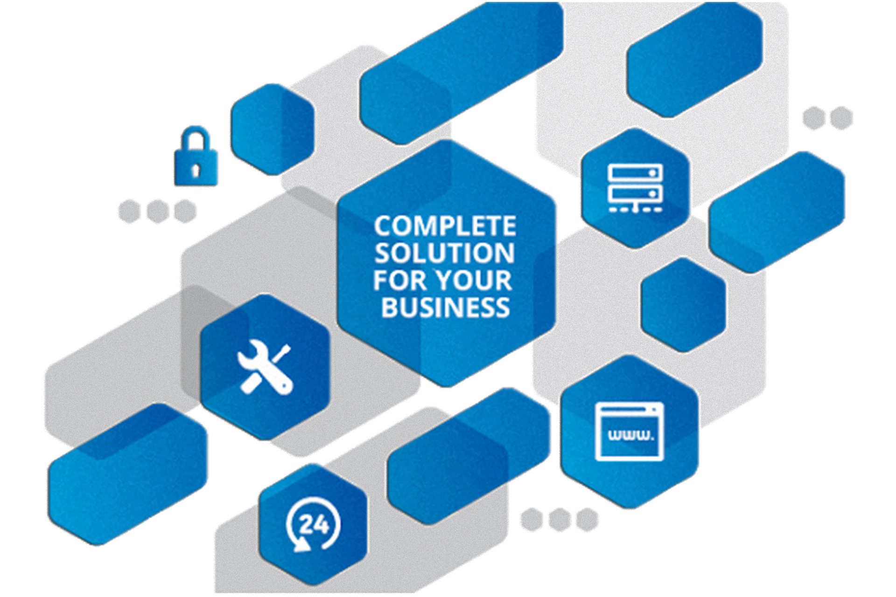

<!--
    <h2>Software development</h2>
        <p>Entrust full-cycle implementation of your software product to our experienced BAs, UI/UX designers, developers, and QA experts.</p>
        
        <div class="one">
            <h2>Creative Software & <br>Graphics Solution</h2>
            <p>Creativity is the main focus of our company, we always make sure our clients delivered new and creative software and graphics products from us.</p>
        </div>
        <div class="two">
            <h2>Customer relationship<br> management<br> solutions</h2>
            <p>Our digital agency can consult you on online business development and research, audit your websites and software, Optimize your B2B and B2C solutions</p>
            </div>
            <div class="three">
                <h2>Continues IT support</h2>
                <p>do you have problem with setting up your own IT department? No Worries!
                    we can setup the IT support team and give you on demand IT support.</p>

            </div>

        </div>
        <div class="four">
            
            <h2>We don’t build software 
               <br> we build solutions</h2>
                <p>We analyze, we ask questions, we propose the most relevant solutions at every stage of the project. We know the code isn’t everything – it’s all about a great working solution. Qemer Software Technology is a software development company with full-cycle web and mobile development.</p>
                -->